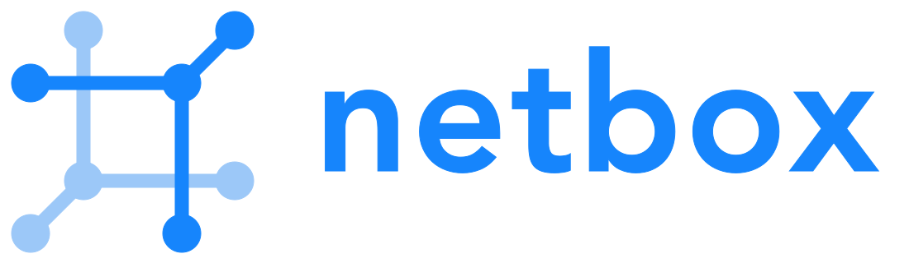
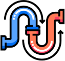

CMDB
NetBox keeps infrastructure, Docker hosts and instance inventory organized as the operational source of truth.
SaaS next solution engine
Make SaaS our problem. Focus on product and revenue while SaaShup provides the platform, automation and managed services around your Docker application.
POST /saas
✓ Docker image received
✓ NetBox source of truth updated
✓ Traefik route prepared
✓ Keycloak authentication enabled
✓ Prometheus metrics active
✓ Grafana dashboard ready
✓ Customer instance readyTry it now
Have a Docker image ready? Enter the image registry and launch your SaaS instance.
SaaShup turns a containerized application into a sellable SaaS experience with hosting, authentication, payments, logs, monitoring, backups, support workflows and customer-facing management tools.

NetBox Keycloak Prometheus Grafana
FlowGPlatform services
NetBox keeps infrastructure, Docker hosts and instance inventory organized as the operational source of truth.
Keycloak provides identity, SSO and group-based access for admin and customer workflows.
Prometheus collects metrics from the platform, containers and lifecycle automation.

Grafana turns platform metrics into dashboards for capacity, health and operational visibility.
FlowG centralizes container and system logs so operators can trace activity from one place.
Traefik routes public traffic to each service and applies the platform edge rules automatically.

Cloudflare handles DNS and edge protection for instance domains created by the platform.

Docker runs the application containers, volumes and lifecycle operations behind each order.
What you get
Provide a Docker image and expose the ports and persistent paths your application needs.
Define plan, memory, price, domain and environment settings from the SaaShup portal.
Deploy instances, attach platform services and let customers start using the product.
Upgrade versions, monitor health, review logs and adapt capacity as the business grows.
Workflow
The platform keeps the route from application to revenue intentionally short while still covering the operational pieces that make SaaS hard to maintain alone.
Ready when your image is
Start with the free Iron plan, then scale support, backup and consulting when you need more coverage.
Contact us